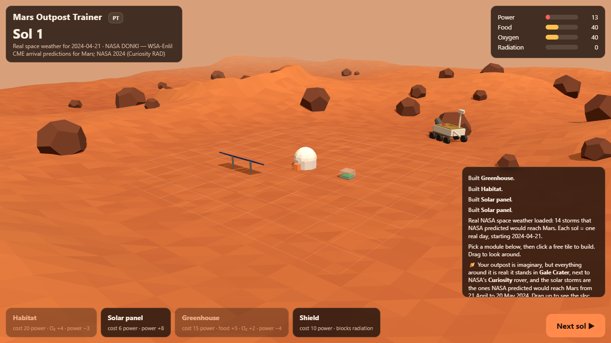
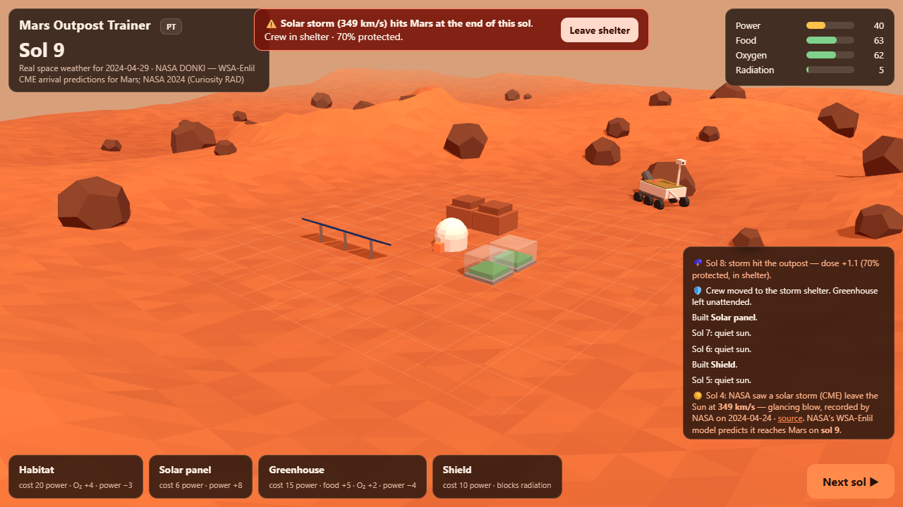
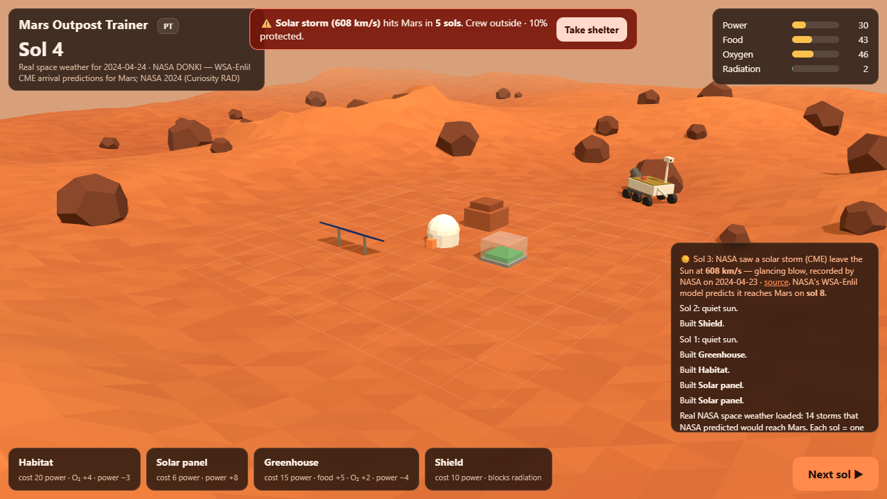
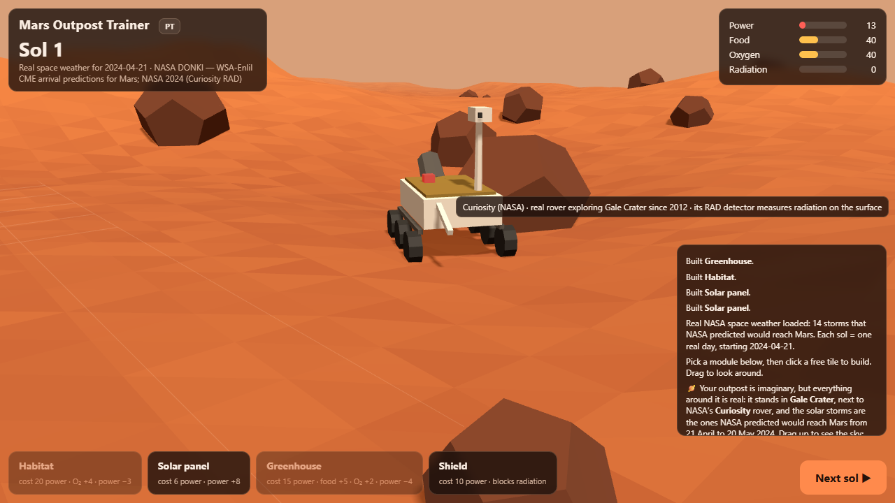
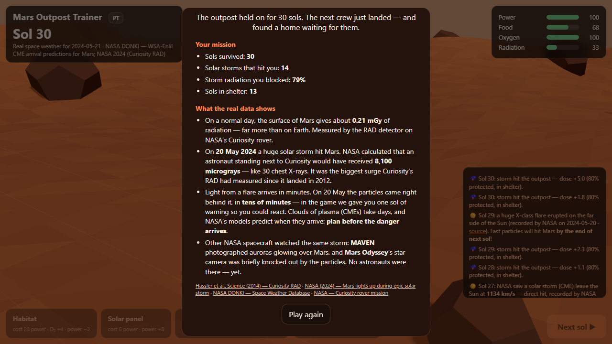
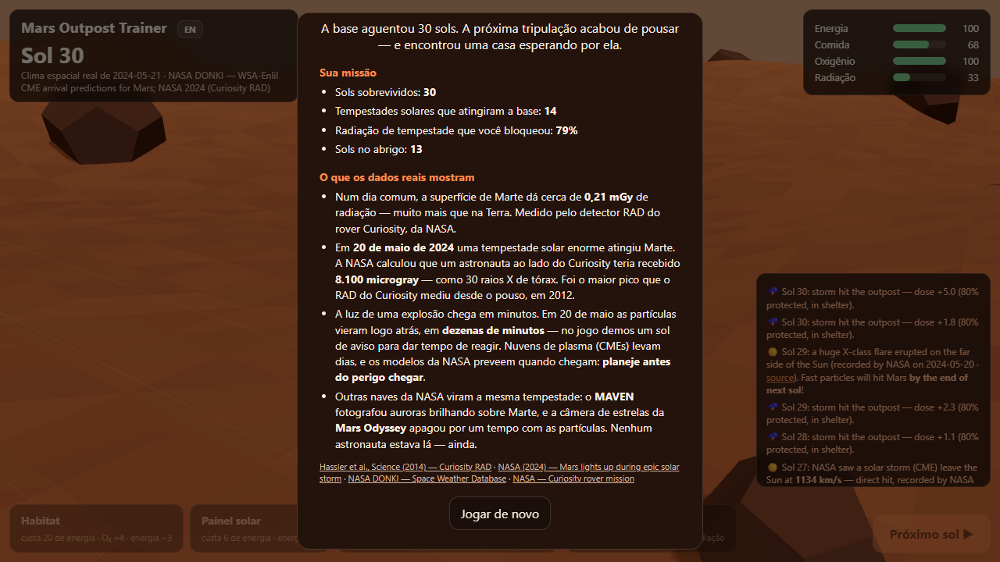
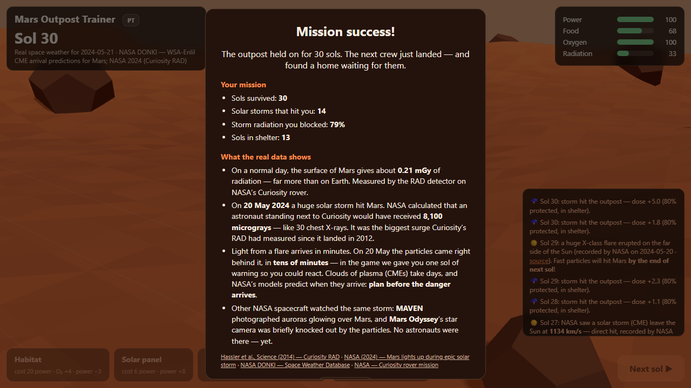

NASA Space Apps Challenge 2026 · Build a Junior Astronaut Mission Trainer
Mars Outpost Trainer
Survive the real solar storms of May 2024
Team Mars Outpost Trainer · Rogenrique Melo
Play free in the browser: mars-outpost-trainer.vercel.app
Game screenshots · code written with AI assistance (Claude)
Living on a new frontier means planning before the danger arrives
On Mars there is no thick atmosphere or magnetic field to stop radiation from the Sun. Solar storms are one of the biggest real risks for future astronauts.
Mars Outpost Trainer lets students aged 10–14 feel that risk safely: they run an outpost for 30 sols and must keep the crew fed, breathing and protected.
Game screenshot · code written with AI assistance (Claude)
Build, balance, survive 30 sols
- Pick a module and click a tile: Habitat (oxygen), Solar panel (power), Greenhouse (food) and Shield (radiation).
- Watch four bars: Power, Food, Oxygen, Radiation.
- A storm warning comes in: move the crew to the shelter — but the greenhouse is left unattended. Safety costs food.
- No install, works in any browser, one click to play.

Game screenshot · code written with AI assistance (Claude)
Every storm in the game really happened
- Each sol is one real day, 21 April – 20 May 2024.
- The storms are the 14 coronal mass ejections that NASA’s WSA-Enlil model predicted would reach Mars, from the NASA DONKI space weather database.
- The warning arrives the day the CME left the Sun; it hits on the day NASA predicted, with its real speed and whether it was a direct hit.
- Each log entry links to the NASA record.

Game screenshot · code written with AI assistance (Claude)
An imaginary outpost in a real place
- It stands in Gale Crater, next to NASA’s Curiosity rover; its RAD radiation detector glows when a storm hits.
- Two lights cross the sky: the orbiters MAVEN and Mars Odyssey, which also watched the May 2024 storm.
- Finale: 20 May 2024, the biggest surge Curiosity’s RAD had measured since landing in 2012.
- We say clearly what we simplified: game doses are balanced for play, and the real particles arrived in tens of minutes, not one sol.

Game screenshot · code written with AI assistance (Claude)
The debrief turns the game into science
- At the end, students see what they did (storms survived, radiation blocked, sols in shelter) next to what the real data shows.
- NASA calculated an astronaut next to Curiosity would have received 8,100 micrograys on 20 May 2024 — like 30 chest X-rays.
- Every fact links to its source (NASA, DONKI, Science 2014).
- One click switches English ⇄ Portuguese.


Game screenshots · code written with AI assistance (Claude)
From one storm season to a full mission trainer
- Real terrain of Gale Crater from NASA Mars Trek.
- More missions from other real space weather seasons in DONKI — new data, new challenges.
- Classroom mode: teacher guide and playtests with students.
- More languages, so any school can use it for free.
Play: mars-outpost-trainer.vercel.app
Code: github.com/ilustrandodadosdev/mars-outpost-trainer

Game screenshot · code written with AI assistance (Claude)